Calendario F1 2023
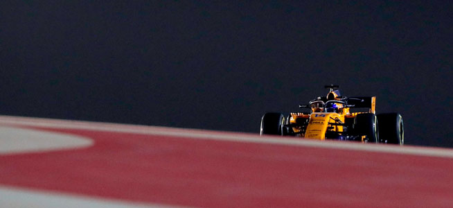
GP Bahrein
Sakhir - 5 de Marzo
57 vueltas | 5.412 km/vuelta | 308.484 km

GP Arabia Saudí
Jeddah - 19 de Marzo
50 vueltas | 6.174 km/vuelta | 308.700 km
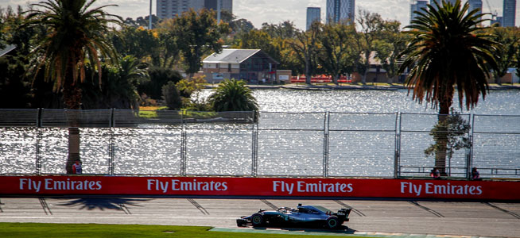
GP Australia
Melbourne - 2 de Abril
58 vueltas | 5.303 km/vuelta | 307.574 km

GP Azerbaiyan
Bakú - 30 de Abril
51 vueltas | 6.003 km/vuelta | 306.153 km
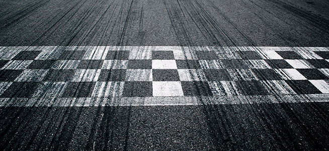
GP Miami
Miami - 07 de Mayo
57 vueltas | 5.412 km/vuelta | 308.484 km
GP Emilia Romaña
Imola - 21 de Mayo
63 vueltas | 4.909 km/vuelta | 309.267 km
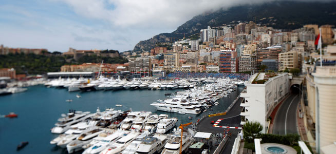
GP Monaco
Montecarlo - 28 de Mayo
78 vueltas | 3.337 km/vuelta | 260.286 km

GP España
Barcelona - 4 de Junio
66 vueltas | 4.675 km/vuelta | 308.550 km
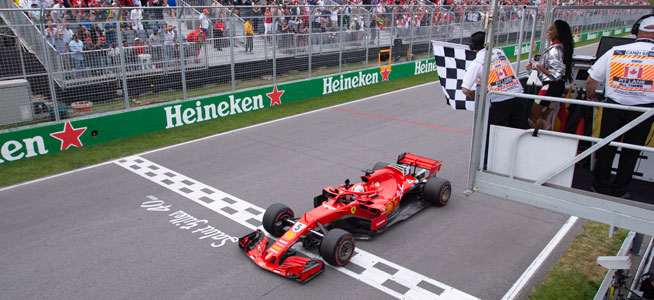
GP Canada
Montreal - 18 de Junio
70 vueltas | 4.361 km/vuelta | 305.270 km
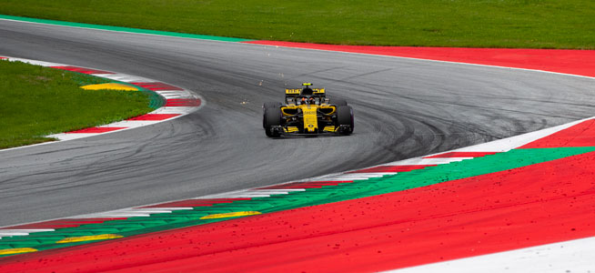
GP Austria
Spielberg - 2 de Julio
71 vueltas | 4.318 km/vuelta | 306.578 km
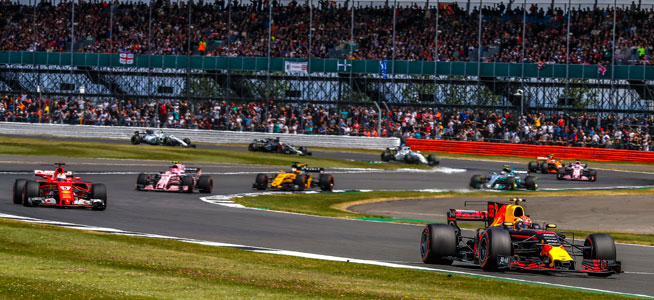
GP Gran Bretaña
Silverstone - 9 de Julio
52 vueltas | 5.891 km/vuelta | 306.332 km
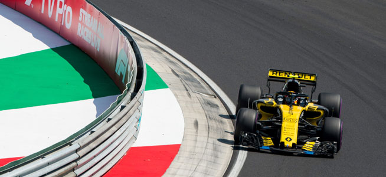
GP Hungría
Budapest - 23 de Julio
70 vueltas | 4.381 km/vuelta | 306.670 km
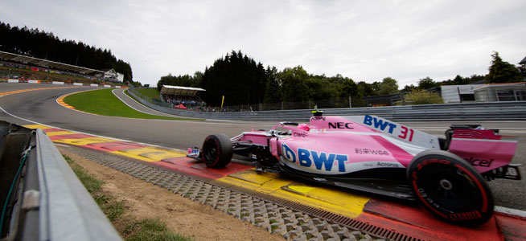
GP Bélgica
Spa - 30 de Julio
44 vueltas | 7.004 km/vuelta | 308.176 km

GP Paises Bajos
Zandvoort - 27 de Agosto
72 vueltas | 4.259 km/vuelta | 306.648 km
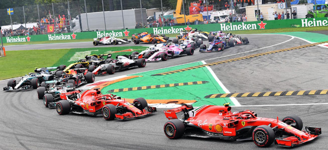
GP Italia
Monza - 3 de Septiembre
53 vueltas | 5.793 km/vuelta | 307.029 km
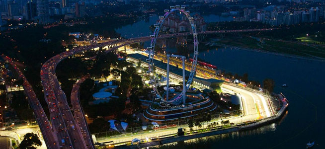
GP Singapur
M. Bay - 17 de Septiembre
61 vueltas | 5.063 km/vuelta | 308.843 km